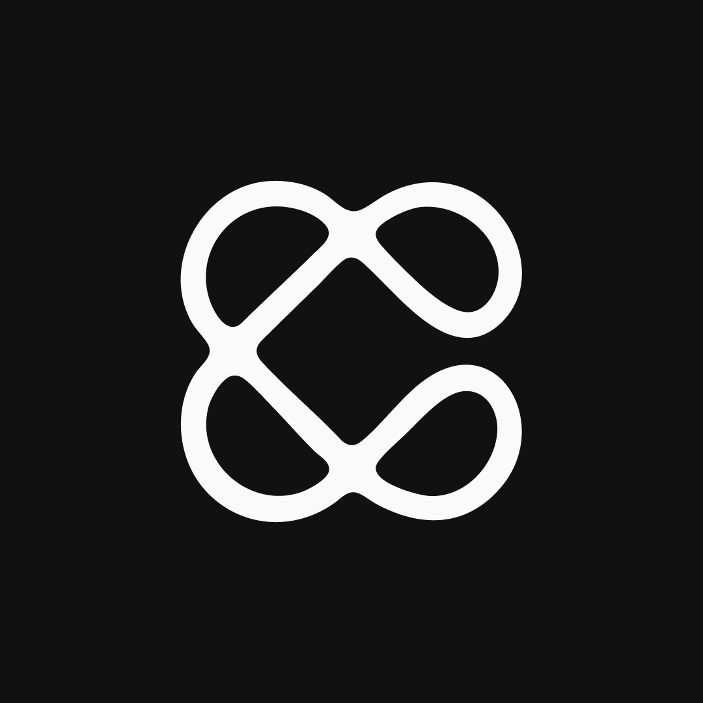
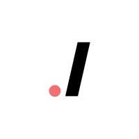

hi i'm essam 👋
san francisco, ca
i'm ceo & founder of canvas ai building ai agents for customer success backed by yc.
previously, i built ai systems at twitch and aws, training billion-parameter models. co-founded komma (sales automation) and led codelab, building software for clients like snapchat.
i'm based in sf and love to play backetball, explore coffee shops, and hike. feel free to reach out, you can find me on twitter.
work

canvas ai (yc f24)
founder
building canvas ai backed by yc. ai agents for customer success teams.
harvard
research intern
working on llms, vision models. over 100+ citations in top conferences like cvpr and eccv. check out my google scholar for more.
twitch
applied science intern
trained twitch's first foundation model. developed a continual learning framework for unsupervised, online model training. improved downstream task accuracy across the board by 10%+
amazon/aws
ml eng intern
built aws ivs's first ml-based video understanding platform. service in production
komma
co-founder/cto
led development and sales at komma

codelab
founding president
codelab is the largest cs student org with 150+ members where we build software for tech companies like snapchat.